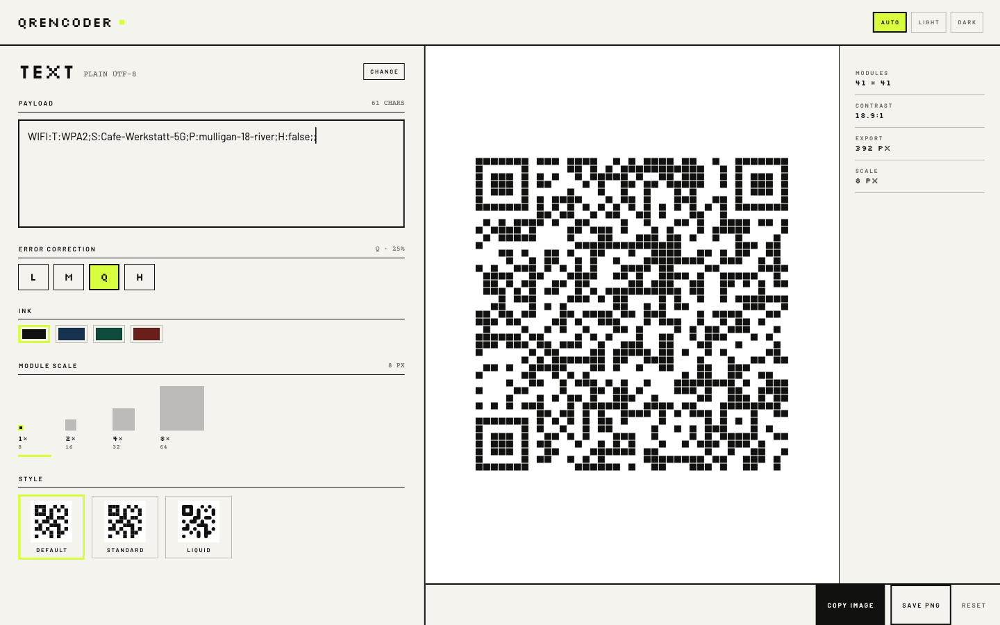
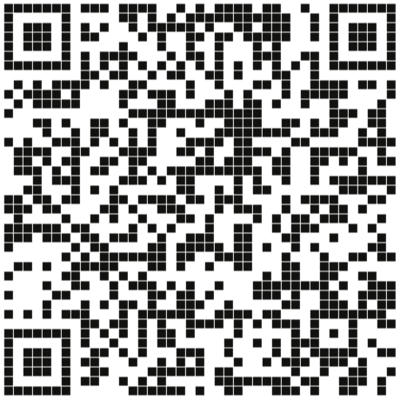
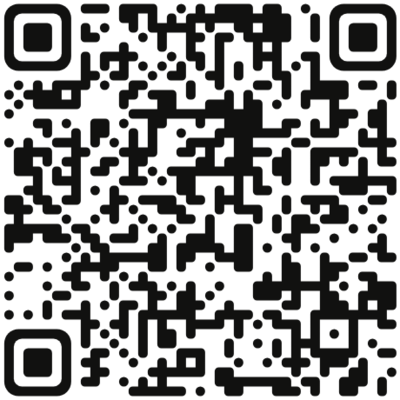
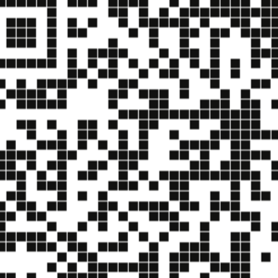
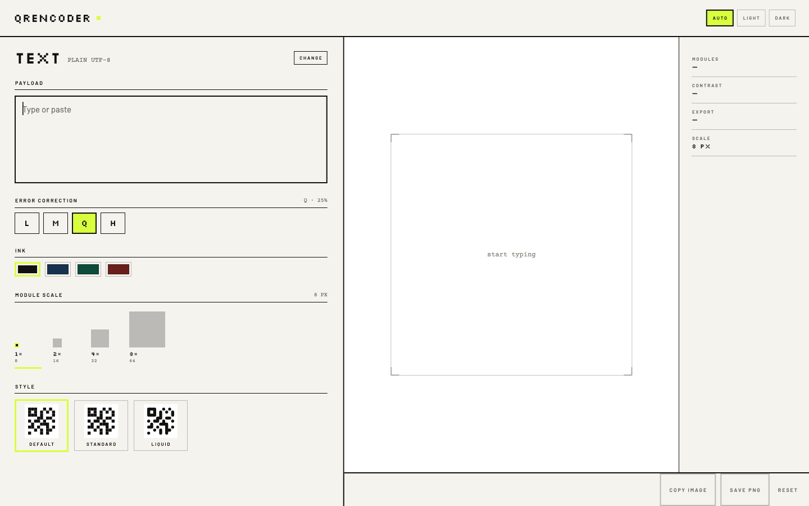
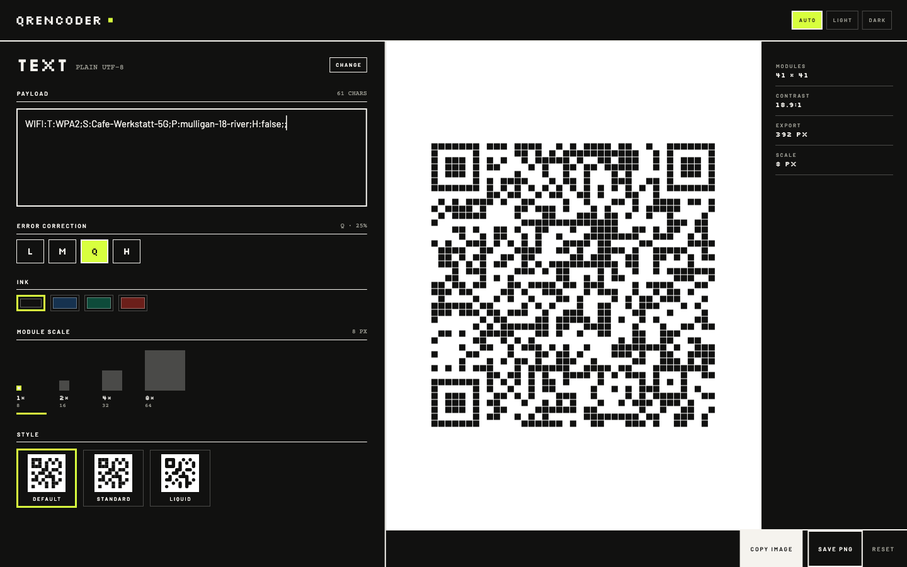
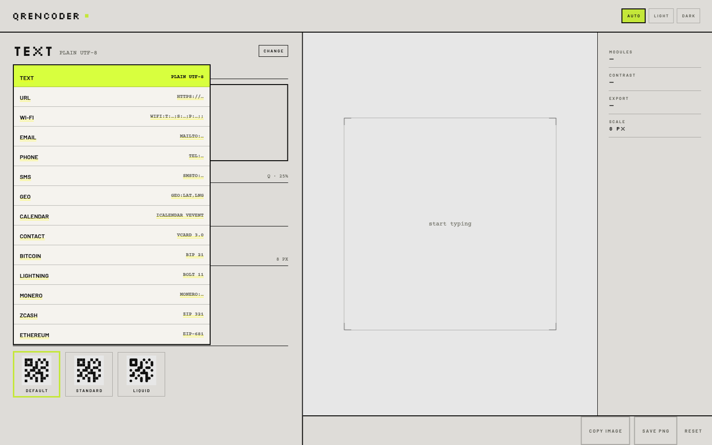
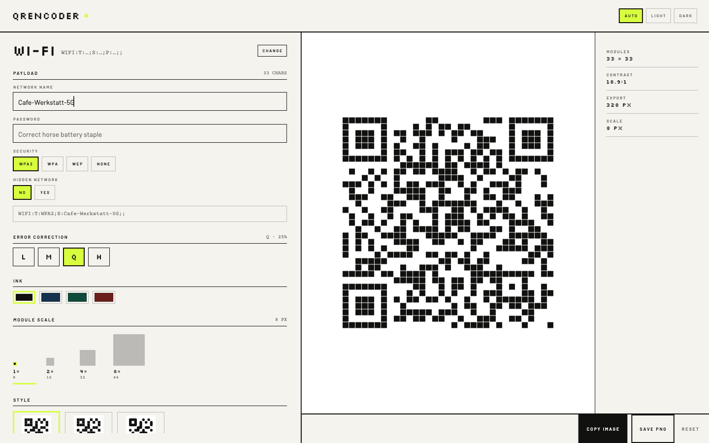
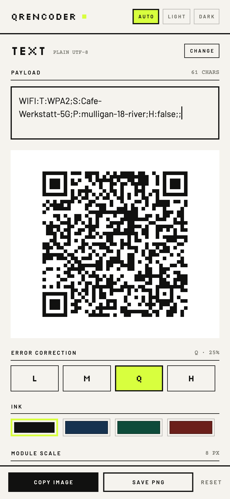
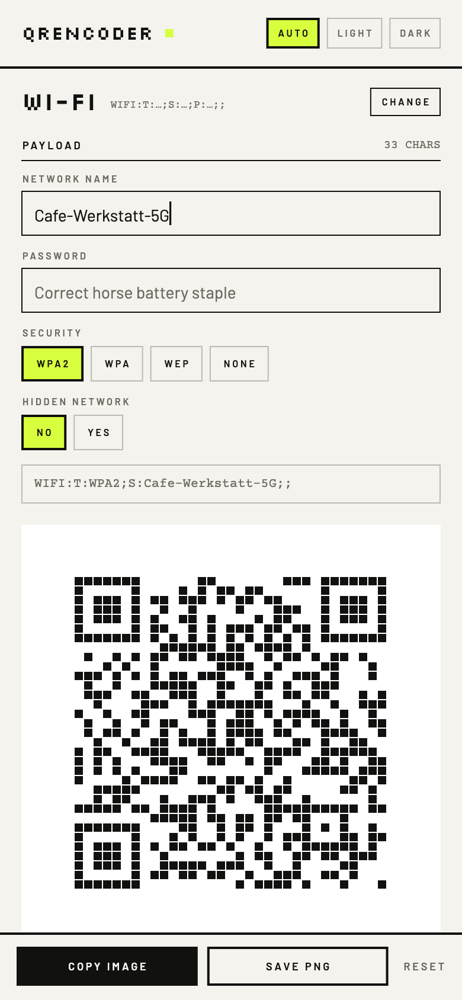

Every module
a whole pixel.
A local-only QR generator for macOS, Linux and Android. Type or paste, or compose a Wi-Fi record, a vCard, a BIP 21 URI — the symbol is already there, with no Generate button and no network call.

One matrix, three hands
The same encoded data, drawn three ways. Preview, style chip and exported PNG all come from one painting routine, so a style cannot look one way on screen and another in the file.
-

Fig. 2 Default Default
A hairline gap opens between modules from 8 px up, so the symbol reads as tiles laid on a grid.
-
Fig. 3 Standard Standard
Squares, edge to edge, with nothing between them. The flattest and highest-contrast of the three.
-

Fig. 4 Liquid Liquid
Modules merge along shared edges, singletons become dots, and the three finder eyes stay unmistakably eyes.
Every style exports at a whole-pixel module scale, quiet zone intact.
Why whole pixels
A QR code is a bitmap, not a picture.
Scale it by 1.37 and every edge blurs; the scanner has to guess where a module ends. QREncoder only ever multiplies — a module is 8 px wide or 16, never 11.4. The grid you see in the preview is the grid that ships.
EXPORT = (MODULES + 8) × SCALE

On the screen






Fourteen payloads
Each payload is a short form that composes its own string, with the result always shown underneath. A Wi-Fi record, a vCard, a BIP 21 URI and an EIP-681 call are built from their parts, not pasted as opaque text.
On Android the app is also a share target: share a link from any app and it opens with the symbol already drawn. A fresh launch always starts on Text, with the caret in the box.
- Textplain UTF-8READY
- URLhttps://…READY
- Wi-FiWIFI:T:WPA2;S:…;P:…;H:false;;READY
- Emailmailto:…?subject=…&body=…READY
- Phonetel:…READY
- SMSSMSTO:…:…READY
- Geogeo:lat,lngREADY
- CalendariCalendar VEVENTREADY
- ContactvCard 3.0READY
- BitcoinBIP 21READY
- LightningBOLT 11READY
- Moneromonero:…?tx_amount=…READY
- ZcashZIP 321READY
- Ethereum / EVMEIP-681READY
Privacy is the architecture
The Wi-Fi password you type never reaches a socket, a log or a database — because there is no server to reach.
SENT
Nothing. The app makes no network requests at all.
STORED
Your last error-correction level, ink, scale, style and theme. Never the payload.
REQUIRED
No account, no licence key, no sign-in.
Get it
Signed builds for macOS and Android ship from these channels. Linux builds from source.
- GitHub releases macOS (build from source) · Android APK · v1.1.1
- Zapstore io.bednar.qrencoder · signed, nostr-verified
- Obtainium follow the releases for updates
Signed with the same Android publisher key everywhere — certificate SHA-256 79750fb4…a20b3a24d. You need Flutter 3.47 or newer to build; the macOS window opens at 1440 × 900, and payloads can also arrive on the command line.
flutter pub get
flutter run -d macos
flutter build macos --release
flutter run -d <android-device>
flutter build apk --releaseqrencoder "WIFI:T:WPA2;S:…;P:…;;"
About this build
QREncoder 1.1.0 was built by an agent running on free tokens — DeepSeek 4.1 Flash on its free tier — with nothing paid anywhere in the loop. It is not a demo: it is the QR generator its author uses, replacing a Mac app that is no longer maintained.
The experiment, its numbers, and the rougher first build from a pool of free models are written up in Token poverty: can you use freely available AI to do productive work? · slovenská verzia.